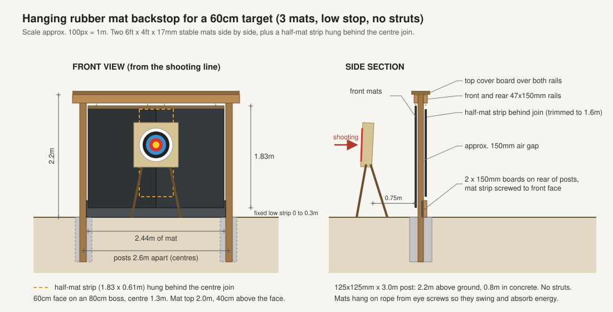
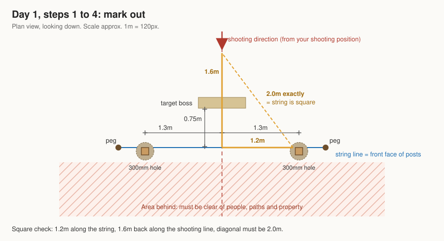
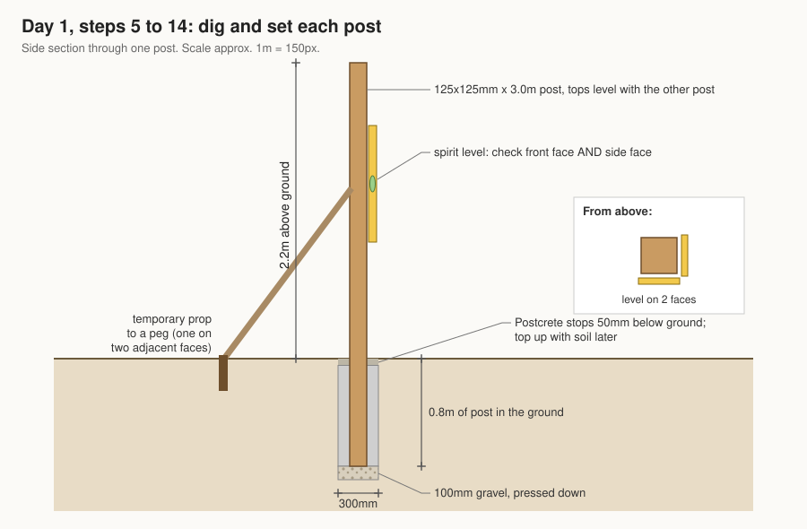
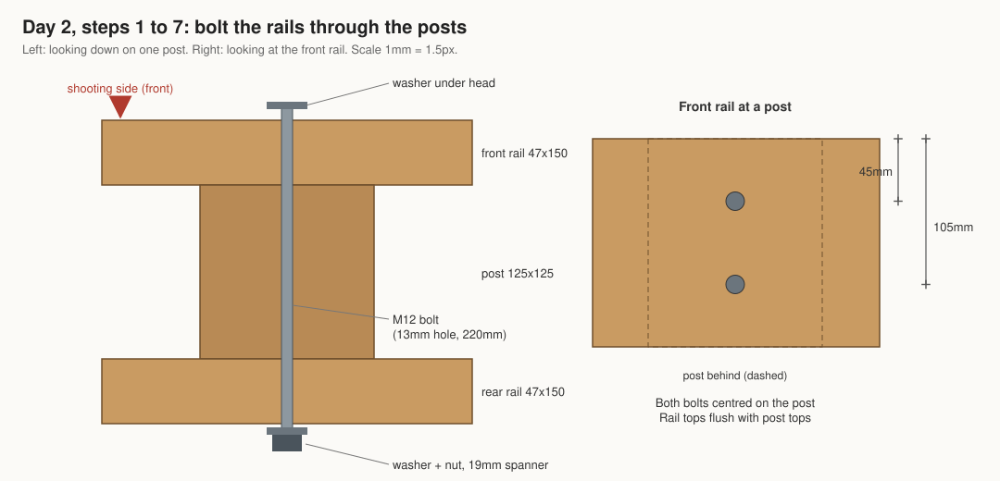
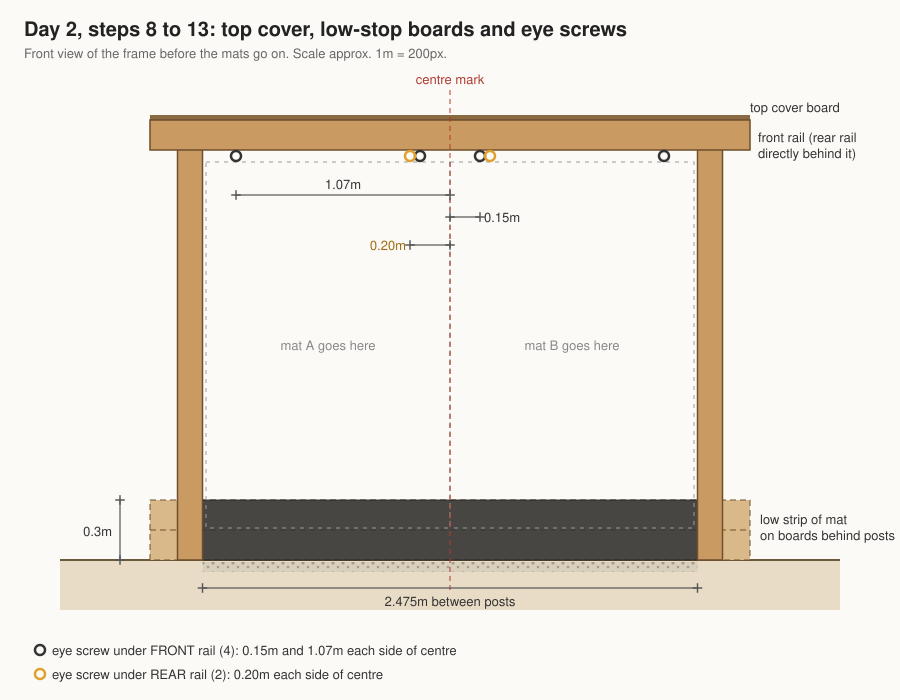
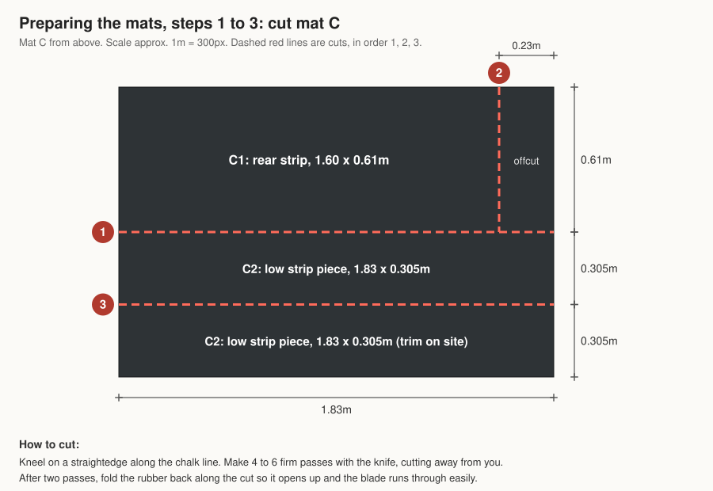
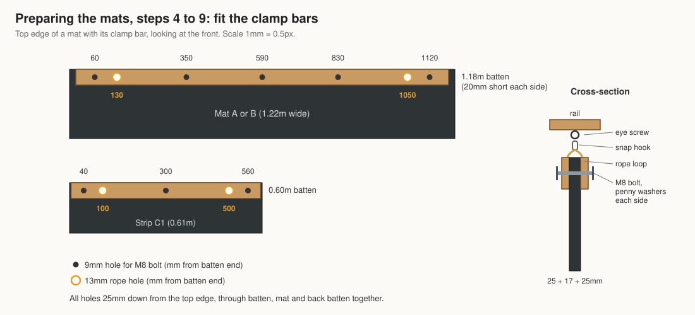
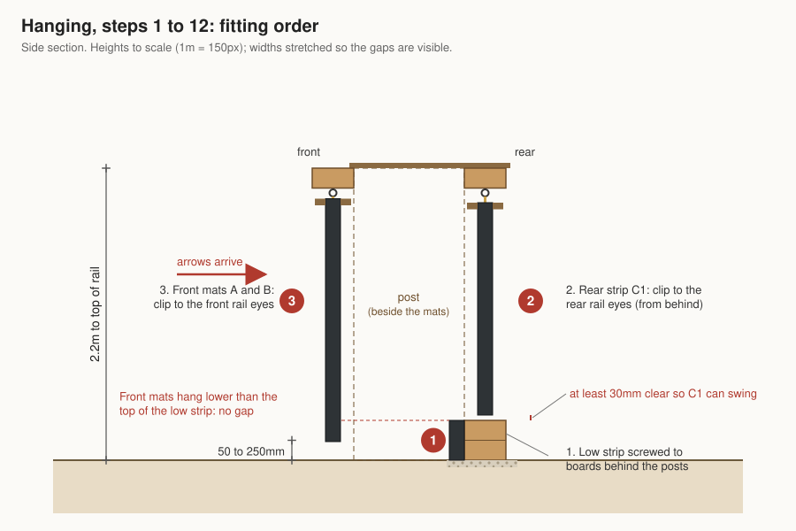

What you are building
A 2.2m tall, 2.6m wide timber frame that hangs three horse stable mats behind a 60cm target. It takes about 2 days of work spread over 3 or 4 days, because the concrete needs time to set.

How it works: two whole mats hang side by side from a front rail. A half-width strip hangs from a rear rail, 150mm behind the join between them. A fixed 30cm strip of mat on boards at ground level catches anything that goes under the hanging mats. Because the hanging mats swing, they soak up the arrow's energy instead of letting it punch through.
| Dimension | Size |
|---|---|
| Height to top of rail | 2.2m |
| Posts | 125x125mm, 3.0m long, 0.8m in concrete |
| Post spacing | 2.6m between centres (2.475m clear gap between them) |
| Hanging mats | top at about 2.0m, bottom 50 to 250mm above ground |
| Width of mat | 2.44m |
| Low stop strip | ground to 0.3m |
| Target | 60cm face on 80cm boss, centre 1.3m high, 0.75m in front of the mats |
Words used in this guide
- Plumb
- Perfectly upright, checked with a spirit level on two adjacent faces.
- Rail
- A horizontal timber bolted across the posts.
- Clamp bar
- Two thin battens bolted through the top edge of a mat so it can be hung without tearing.
- Penny washer
- A large, wide washer that spreads the load so a bolt cannot pull through rubber or timber.
- Pilot hole
- A small hole drilled first so a screw goes in straight and the wood does not split.
Before you start
Sort out four things before you buy anything: where it goes, what is underground, a helper, and the weather.
- Choose the spot. Stand at your shooting position and look past the target. The area behind the backstop must be empty for well beyond a high miss: no paths, neighbours' gardens, sheds or roads in line. Keep the backstop at least 2m from any boundary to stay clearly within planning rules for garden structures (2.5m height limit near a boundary; this is 2.2m).
- Check for buried pipes and cables. Look for where gas, water and electricity enter the house and where any garden lights or outside sockets are fed from. Do not dig within 1m of a known run. If you are unsure, hire a cable detector (called a CAT, about £30 a day from tool hire shops) and sweep both hole positions.
- Get a helper for day 1 and the mat hanging. Posts are awkward to hold plumb alone, and each mat weighs 35 to 40kg. Always lift mats with two people.
- Pick your weather. Concrete needs a dry spell above 5°C with no frost forecast for 48 hours after pouring.
Tools needed
Most of these are ordinary household tools; the post hole digger and long drill bit are the only specialist items.
| Tool | What it is for | Notes |
|---|---|---|
| Spade + post hole digger | Digging the two post holes | Hire a digger for about £15 a day, or buy one for about £30 |
| Digging bar (long steel bar) | Breaking up stones and hard ground in the holes | Hire or borrow |
| Tape measure (5m or longer) | All measuring | |
| String line, 4 pegs, marker spray or sand | Marking out the hole positions | |
| Spirit level, 1.2m if possible | Checking posts are upright and rails level | A strap-on post level (about £8) makes day 1 much easier |
| Stepladder | Fitting the rails and hanging mats | |
| Cordless drill | Drilling bolt holes and driving screws | |
| 13mm wood auger bit, 300mm long | Bolt holes through rail, post and rail (220mm total); rope holes in the clamp bars | About £10 |
| 9mm and 6mm wood bits | M8 bolt holes; pilot holes for eye screws and coach screws | |
| Handsaw or circular saw | Cutting battens to length | A circular saw will not cut a 125mm post in one pass: cut from two sides |
| Stanley knife + heavy-duty blades | Cutting the mats | Change blades often; blunt blades are the main cause of slips |
| Metal straightedge (or a straight length of timber) | Guiding the knife when cutting mats | |
| Spanners or socket set: 13mm and 19mm | Tightening M8 and M12 nuts | |
| Hammer | Tapping bolts through | |
| Bucket or watering can | Water for the Postcrete | |
| 2 spare battens (about 2.4m) + screws | Temporary props to hold posts upright while concrete sets | Any scrap timber will do |
| Pencil and a square | Marking cuts |
Shopping list and costs
Everything comes to roughly £435 to £510, and the mats are the biggest single cost. Collecting the mats yourself from a farm or equestrian supplier avoids pallet delivery charges.
When buying timber that touches the ground, ask for UC4 (Use Class 4) treated timber. It is treated for ground contact and will not rot in the concrete.
| Item | Qty | Used for | Approx. cost |
|---|---|---|---|
| Rubber stable mats, 6ft x 4ft x 17mm (1.83 x 1.22m) | 3 | 2 hang whole, 1 is cut into strips | £120 to £150 |
| Posts, 125x125mm x 3.0m, UC4 treated | 2 | Main uprights | £85 to £100 |
| Timber, 47x150mm x 3.0m, treated | 2 | Front and rear hanging rails | £30 to £40 |
| Timber, 47x150mm x 3.0m, UC4 treated | 2 | Low-stop boards at ground level | £30 to £40 |
| Board, 25x150mm x 3.0m, treated | 1 | Top cover over both rails | £10 |
| Battens, 25x50mm x 2.4m, treated | 3 | Clamp bars for hanging the mats | £10 to £15 |
| M12 x 250mm bolts, nuts and 2 washers each, galvanised | 4 | Bolting rails through the posts | £15 |
| M8 x 100mm coach screws with washers, galvanised | 8 | Fixing the low-stop boards to the posts | £10 |
| Screw eyes, M8 or M10, about 100mm, galvanised | 6 | Hanging points under the rails | £15 |
| Polyester rope, 8mm, plus galvanised snap hooks (60mm) | 6m + 6 hooks | Hanging loops | £20 |
| M8 x 80mm bolts, nylon-insert (nyloc) nuts, 2 penny washers each | 15 sets | Clamp bars | £15 |
| Exterior screws 5 x 50mm + M6 penny washers | 20 of each | Fixing the low strip of mat | £8 |
| Exterior screws 5 x 70mm | 12 | Top cover board and holding rails while drilling | included above |
| Postcrete, 20kg bags | 10 | Setting the posts (about 4 per hole plus spares) | £60 to £70 |
| Gravel, 1 small bag | 1 | Drainage at the bottom of each hole, and under the low strip | £6 |
| Total | about £435 to £510 |
Cut list
Most of the timber is used at its full 3.0m length, so there are only a handful of cuts. Measure twice and mark with a square before every cut.
Timber
| Piece | From | Cut to | Qty |
|---|---|---|---|
| Posts | 125x125mm x 3.0m | No cut | 2 |
| Hanging rails | 47x150mm x 3.0m | No cut (they overhang the posts by about 140mm each side) | 2 |
| Low-stop boards | 47x150mm x 3.0m UC4 | No cut | 2 |
| Top cover | 25x150mm x 3.0m | No cut | 1 |
| Clamp bars for whole mats | 2 of the 25x50mm x 2.4m battens | 1.18m (two from each batten) | 4 |
| Clamp bars for rear strip | 3rd 25x50mm batten | 0.60m | 2 |
Mats (label each piece with chalk as you cut it)
| Piece | From | Size | Used for |
|---|---|---|---|
| Mat A | Whole mat | 1.83 x 1.22m | Front left |
| Mat B | Whole mat | 1.83 x 1.22m | Front right |
| Strip C1 | Mat C, cut in half lengthways, then 0.23m cut off one end | 1.60 x 0.61m | Rear strip behind the join |
| Strips C2 | Other half of mat C, cut in half lengthways | Two pieces 1.83 x 0.305m | Low stop, laid end to end and trimmed to 2.475m total |
| Offcuts | What is left | About 1.18 x 0.30m and 0.23 x 0.61m | Spare patches |
Set out, dig and set the posts
Getting the two posts upright, level with each other and the right distance apart is the most important job in the whole build; everything else bolts onto them. Allow a full day with a helper.
Mark out
- Decide where the target will stand. The backstop line runs across the shooting direction, 0.75m behind the target.
- Knock in two pegs about 3.5m apart on the backstop line and tie a string tightly between them, about 50mm off the ground. This string marks the front face of both posts.
- Find the spot on the string directly behind the target centre. Measure 1.3m each way along the string and mark both points. These are the post centres, 2.6m apart.
- Check the string is square to the shooting direction: from the centre point, measure 1.2m along the string, and 1.6m straight back towards the shooting line. The diagonal between those two points should be exactly 2.0m. If not, swing the string until it is.

Dig the holes
- At each post mark, dig a hole about 300mm across and 900mm deep. The front edge of the hole should be about 90mm in front of the string, so the post can sit centred with its front face on the string. Use the post hole digger to keep the sides straight, and the digging bar to break up stones.
- Put about 100mm of gravel in the bottom of each hole and press it down firmly with the end of a post. This lets water drain away from the post end.
Set the posts
- Stand the first post in its hole. Measure from ground level to the top: it should be 2.2m. Add or remove gravel until it is.
- Turn the post so its front face sits against the string line and its sides are square to it.
- Hold a spirit level against the front face, then a side face. Adjust until both show upright. Screw two temporary props (scrap battens) from two adjacent faces of the post down to pegs in the ground, so it stays upright on its own.
- Stand the second post the same way. Lay a straight rail across both tops with the spirit level on it; add or remove gravel under the second post until the tops are level. Check the distance between the posts at both the top and the bottom: 2.475m between inner faces.
- Pour water into the first hole until it is about one-third full, then pour in Postcrete until it is about 50mm below the ground. That is roughly 4 bags. Follow the instructions on the bag if they differ.
- You have about 5 minutes before it starts setting. Recheck the level on both faces straight away and nudge the post if needed.
- Repeat for the second post, then recheck the spacing and that the tops are level.
- Leave the props in place. Postcrete sets in minutes, but leave it at least 24 hours before bolting anything on and 48 hours before hanging the mats. Fill the last 50mm of each hole with soil later.

Rails, top cover, low-stop boards and hanging points
Once the concrete has had 24 hours, the rest of the frame goes on in about half a day. You can remove the temporary props once both rails are bolted on.
Hanging rails
- Mark the centre of each 3.0m rail (1.5m from either end).
- Hold the first rail against the front faces of the posts, top edge flush with the post tops, centre mark in the middle between the posts. It should overhang each post by about 140mm. Drive one 70mm screw through the rail into each post to hold it while you drill.
- Do the same with the second rail on the back faces of the posts.
- At each post, mark two bolt holes on the front rail, both centred across the post: one 45mm down from the top, one 105mm down.
- Drill each hole with the 13mm auger, straight through front rail, post and back rail (220mm). Have your helper stand to the side and tell you if the drill is tilting. Go slowly and pull the bit out every 50mm to clear the chips.
- Push an M12 bolt through each hole with a washer under the head, tapping it with a hammer if tight. Fit a washer and nut on the back and tighten with a 19mm spanner until the washers just start to bite into the wood.
- Put the spirit level on top of the front rail to confirm it is level. Remove the temporary props.

Top cover
- Lay the 25x150mm board flat across the tops, its front edge flush with the front face of the front rail. Screw it down with two 70mm screws into the front rail at each end, and two into each post top. It sheds rain off the rail tops and post ends.
Low-stop boards
- Along the back faces of the posts, dig a shallow trench 50mm deep and 150mm wide, and fill it with gravel so the boards will sit on gravel, not wet soil.
- Stand the first UC4 47x150mm board on edge on the gravel, against the back faces of the posts, centred like the rails. Stand the second on top of it; the top edge should be about 300mm above ground.
- At each post, drill two 9mm holes through each board (so 4 per post), then a 6mm pilot hole 60mm deeper into the post. Drive in the M8 x 100mm coach screws with a washer using the 13mm spanner.
Hanging points (eye screws)
Measure all positions from the centre mark on each rail. Fit the eye screws into the underside of the rail, along its middle.
| Rail | Eye screw positions from centre | For |
|---|---|---|
| Front | 1.07m and 0.15m to the left | Mat A |
| Front | 0.15m and 1.07m to the right | Mat B |
| Rear | 0.20m left and 0.20m right | Strip C1 |
- Drill a 6mm pilot hole 70mm deep at each mark, pointing straight up.
- Wind in each eye screw by hand, then use a screwdriver pushed through the eye as a lever to screw it fully home. The eye should end up facing across the frame (left to right), so the rope loops hang straight.

Preparing the mats
Cutting one mat and fitting clamp bars to three pieces takes 2 to 3 hours. Work on a flat patch of ground or a sheet of old plywood.
Cutting rubber safely
- Cut from the smoother top face, with a scrap board underneath.
- Kneel on the straightedge to hold it, and always cut away from yourself with your other hand behind the blade.
- Do not try to cut through in one go. Make 4 to 6 firm passes along the same line.
- After the first two passes, fold the mat back along the cut. The cut opens up and the blade goes through far more easily.
- Dip the blade in soapy water if it drags, and change it as soon as it feels blunt.
Cuts (all on mat C)
- Chalk a line down the middle of mat C lengthways, 610mm from one long edge. Cut along it to make two 1.83 x 0.61m halves.
- Take one half. Chalk a line across it 230mm from one end and cut it off. This is strip C1 (1.60 x 0.61m), the rear strip.
- Take the other half. Cut it in half lengthways, 305mm from an edge. These two pieces are strips C2, for the low stop. Leave them long for now; you will trim them on site.

Fitting the clamp bars
Each hanging piece gets a batten on the front and one on the back of its top edge, bolted through. The bolts hold the battens on; separate rope holes take the weight.
| Piece | Battens | Bolt holes (9mm), along the batten | Rope holes (13mm), along the batten |
|---|---|---|---|
| Mat A and mat B | 2 x 1.18m each | 60, 350, 590, 830, 1120mm | 130 and 1050mm |
| Strip C1 | 2 x 0.60m | 40, 300, 560mm | 100 and 500mm |
- Lay the mat flat. Place one batten along the top short edge, flush with the edge and centred, so it stops about 20mm short of each side.
- Mark all the holes on the batten, 25mm down from its top edge (the middle of the batten).
- Put the second batten directly underneath, on the back of the mat, lined up exactly. Hold the sandwich together with two screws through the ends, or with clamps.
- Drill all the holes straight through batten, mat and batten: 9mm for bolts, 13mm (the auger) for rope. Drill rubber slowly with light pressure; fast drilling makes it grab and wrap.
- Fit the M8 bolts: penny washer under the head, through the sandwich, penny washer, nyloc nut. Tighten until the rubber just starts to squash, no more.
- Repeat for the other whole mat and for strip C1.

Hanging the mats and fitting the low strip
Fit the pieces in this order: low strip, rear strip, then the two front mats. Each one is easier to reach before the next goes up. Wait until the concrete has had 48 hours.

Low strip
- Stand the two C2 strips on their long edges, end to end, between the posts against the front face of the low-stop boards, bottom edges on the gravel.
- Measure the gap between the posts (about 2.475m). Leave the first strip at its full 1.83m and trim the second to fill the rest, so the two butt tightly together.
- Screw them to the boards with 5 x 50mm screws and M6 penny washers, in two rows (75mm and 225mm up from the ground), a screw every 250mm along each row.
Rope loops
- Cut six 400mm lengths of rope. Melt each end briefly with a lighter so it will not fray.
- Thread one length through each rope hole in the clamp bars and tie its ends together with a double fisherman's knot, making a loop about 100mm long. It is an easy knot and will not slip; a 30-second video search shows how.
- Clip a snap hook onto each loop.
Rear strip (C1)
- From behind the frame, lift strip C1 so its clamp bar sits under the two rear-rail eye screws, and clip both snap hooks on. Two people make this easy: one lifts, one clips.
- Check the bottom edge is at least 30mm clear of the top of the low-stop boards so it can swing. If not, shorten the loops by retying.
Front mats (A and B)
- With a helper on a stepladder, lift mat A (left) by its clamp bar, one person at each end. Clip the snap hooks onto the two left eye screws on the front rail.
- Hang mat B on the right-hand pair the same way. The two mats should meet edge to edge at the centre, directly in front of strip C1.
- Check the bottom edges are level with each other and between 50mm and 250mm above the ground, so they swing freely but still hang in front of the low strip. Retie loops to adjust.
- Push each mat gently backwards. It should swing freely and settle back without catching on the posts.
Testing and first use
Test at short range with no target first, so you can see exactly how the mats behave. Make sure nobody is behind the backstop.
- Shoot 6 arrows into the mats from 5m with a lighter bow, aiming at different areas including near the edges and the centre join.
- Walk round the back. Check that no arrow has come through, and look at how far the points poke out of the back of the mats.
- Repeat at 10m with your heaviest bow.
- If points are showing more than 20mm out of the back of the front mats anywhere, hang one of the spare offcuts behind that spot.
- Set the boss up at 1.3m centre height, 0.75m in front of the mats, and start shooting at your normal distance.
Maintenance and rotating the mats
The mats around the target will wear first; because they hang from snap hooks, you can swap them round in minutes instead of replacing them.
| When | What to do |
|---|---|
| Every session | Look at the back of the mats for points poking through |
| Monthly | Check rope loops for fraying and snap hooks for rust; retie or replace |
| Every few months | Swap mats A and B left to right, so the most worn area moves away from the target |
| When strip C1 wears through | Replace it with a fresh strip cut from a new mat (one mat gives two strips) |
| Once a year | Tighten the M12 bolts and coach screws; check the posts are still upright |
When a front mat has a worn patch you cannot rotate away, hang a spare offcut behind it from two extra eye screws on the rear rail. A replacement mat costs about £40 to £50.